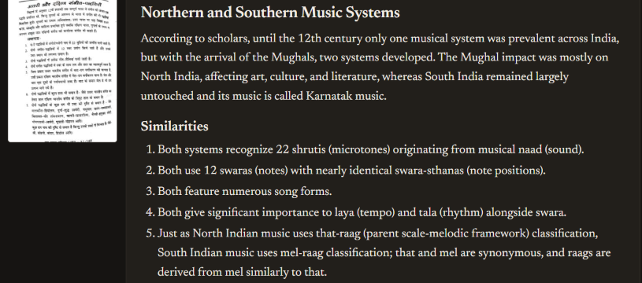

My main project is Anuvad, a translator for PDFs, photos, documents and audio. I built it by voice: I spoke every request through Wispr Flow, Claude Code wrote the code, and I tested each version and decided what came next.
Copy text out of many Hindi PDFs and you get gibberish, because they're typed in old fonts such as Kruti Dev. This is what a Hindi sentence can look like:
Ordinary translators can't do anything with that. Anuvad reads each page as an image, the way a person would, so old fonts and scanned pages work. Then it keeps the headings, lists and tables, and lets you edit and download the result.
117languages, either direction
8kinds of input, from PDF to voice
12versions released
7days from first commit to v1.11

A real result from an early version: a Hindi page on the left, and its English translation on the right with the heading and numbered list kept.
Reads almost anything: PDFs, photos, screenshots, Word, PowerPoint, text files, recordings, typed text and single words.
Subject-aware: name a subject, and most translations use that field's own keywords.
Refine by instruction: select a sentence and ask for "more formal" or "simpler English".
Explain mode: a plain summary, key terms and points to remember, for students.
Real downloads: PDF with searchable text, Word, HTML and Markdown, with or without the originals.
No server, no sign-up: your work stays in your browser, even after a refresh.
How it was built
Spoken, then built
These are my actual requests, dictated with Wispr Flow while I had the site open in front of me. Speaking meant I could describe a problem the moment I saw it, in the same words I'd use with a person.
"When I'm saving a file as a PDF, why is the print option opening? I want you to save it to the file on the computer and show the computer option, not the print option."
What changedPDFs are now made inside the browser and saved through the computer's own Save window.
"When I translated it to French, the second page did not translate well."
What changedDense pages sometimes came back untranslated. Each page is now checked, and any leftover text gets a second pass.
"After refreshing, it's still not coming back. Everything is just vanishing."
What changedFiles, translations and settings are now saved in the browser, and come back after a refresh.
"First time, I should get the hints and a guide pop-up type of thing to know how this app works."
What changedFirst-time visitors get a 9-step guide that points at each part of the page.
Testing
Voice is fast. Checking is still the job.
Before submitting, I had Claude Code test the live site from start to finish. It found problems that looking at the site would never have shown, and they were then fixed:
A security hole. A link inside a translation could run code and read a saved access code. Now only web and mail links can be clicked.
A wrong error message. A mistyped Claude key said "Couldn't reach Anthropic". It now says the key is wrong.
A word limit that overshot. A limit of 50 words across 6 pages actually asked for 180. Shares now add up to the limit.
Silent text loss. The Word download dropped anything shaped like an HTML tag. It's now kept.
Automated tests now run on every push, and the page has a security policy that limits what it can load.
Timeline
One week, one request at a time
First version: a Hindi syllabus PDF into English. Then any Hindi document, subject-aware terms and a word limit.
A word limit that's actually enforced, direct PDF download, and several PDFs translated as one.
117 languages, work kept after a refresh, Text mode, and a dictionary card for single words.
Photos, Word and PowerPoint files, Refine, History, Word downloads, searchable PDFs, voice, Explain mode, a choice of AI engine, the first-visit guide, and the security fixes.
Being straight
Its limits
To translate, you need your own free Google access code, which takes about 2 minutes to get. In recent desktop Chrome, plain text also works without one.
AI translation is very good but not perfect, so check important names, dates and numbers.
PDFs in Chinese, Japanese and Korean download as pictures, without searchable text.
The app is one large file. That was the fastest way to build it, and it's now due for splitting up.
Built with: Wispr Flow, Claude Code, HTML, CSS and JavaScript, PDF.js, the Gemini API, and GitHub Pages.